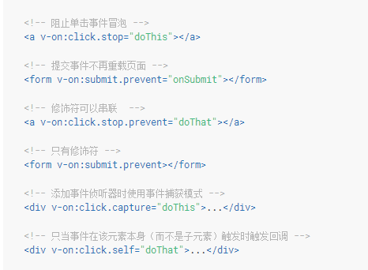

#监听事件
可以用 v-on 指令监听 DOM 事件来触发一些 JavaScript 代码。
用方法来监听，上面相当于js内联方法
有时需传参数的同时也需要访问原生 DOM 事件。可以用特殊变量 $event 把它传入方法：
这里顺便介绍下原生事件对象的两个事件
event.preventDefault()：
会跳到百度？方法阻止元素发生默认的行为（例如，当点击提交按钮时阻止对表单的提交）。这里是阻止url跳转
event.stopPropagation():
段落文本内容

该方法将停止事件的传播，阻止它被分派到其他 Document 节点。在事件传播的任何阶段都可以调用它。注意，虽然该方法不能阻止同一个 Document 节点上的其他事件句柄被调用，但是它可以阻止把事件分派到其他节点。
啥意思呢？就是上文一样，点击自身，自身的事件句柄（比如单击的句柄）依然会调用，alert执行了，但是呢，父元素的alert没执行，也就是说被该事件阻止掉了。
#事件修饰符
在事件处理程序中调用 event.preventDefault() 或 event.stopPropagation() 是非常常见的需求。尽管我们可以在 methods 中轻松实现这点，但更好的方式是：methods 只有纯粹的数据逻辑，而不是去处理 DOM 事件细节。
#按键修饰符
在监听键盘事件时，我们经常需要监测常见的键值。 Vue 允许为 v-on 在监听键盘事件时添加按键修饰符：